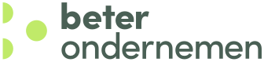
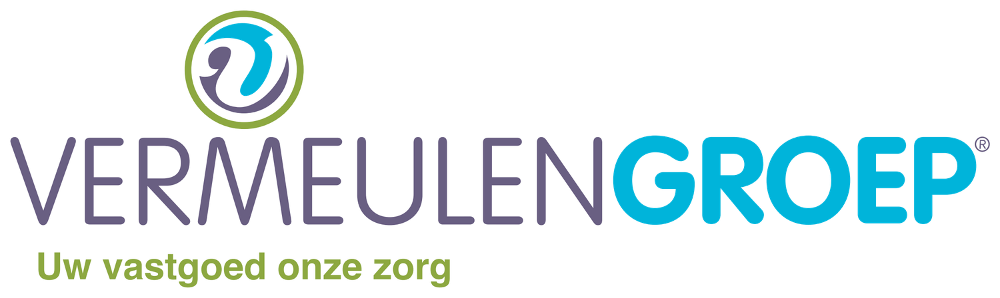
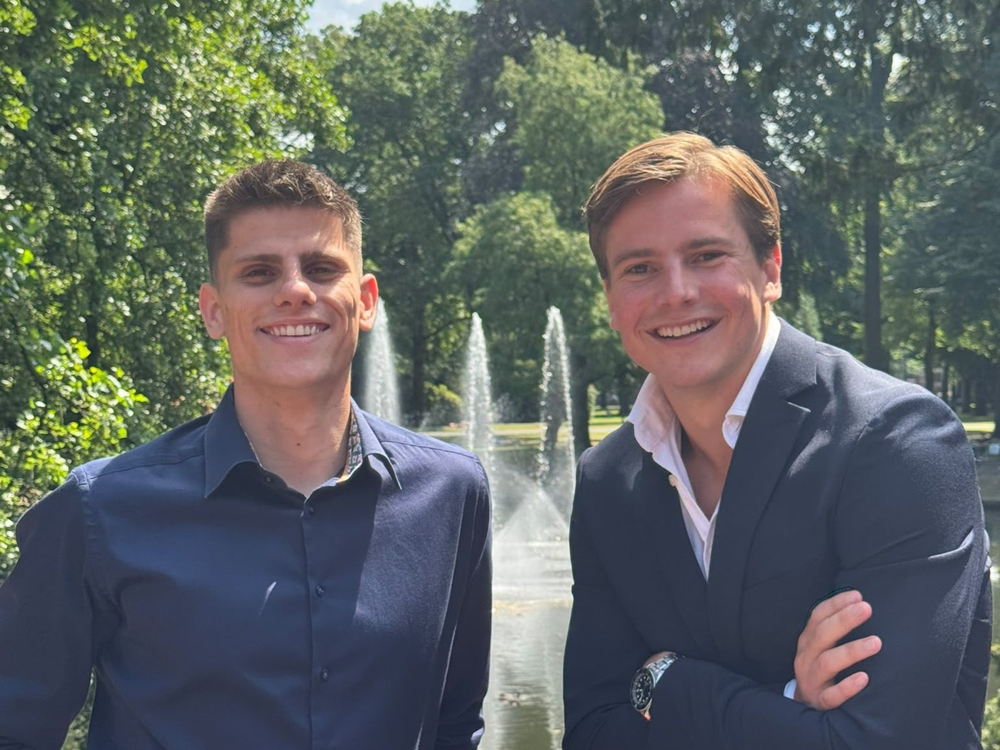
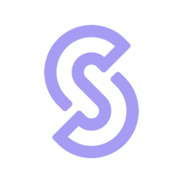
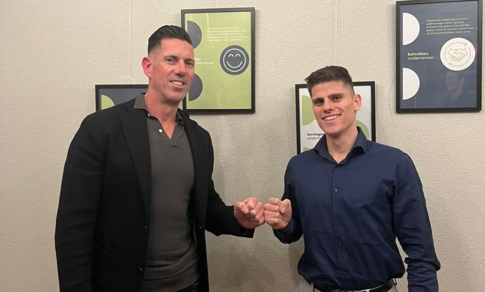
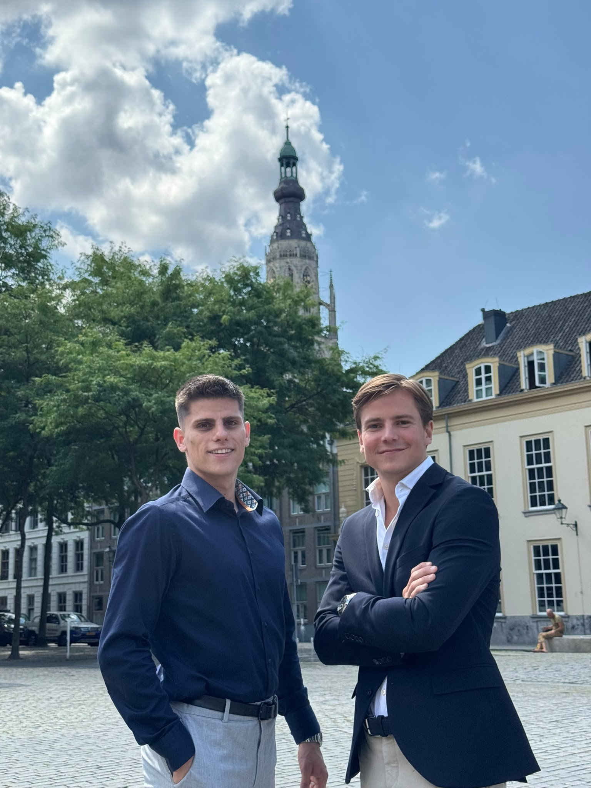
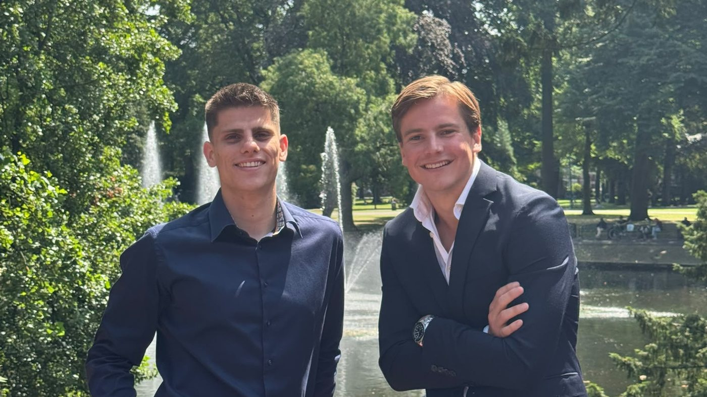

Verbinden
Meer uit je huidige systemen
Wij zetten de functies in die je systemen al hebben en verbinden ze met elkaar. Eén keer invoeren, overal actueel.
Strategie & automatisering · Breda
Eerst de strategie: welke 20% kost 80% van je tijd? Dan automatiseren wij die, met AI waar het past.
Een week van je team Voorbeeld · elk blok is 2 uur
Zo gaat het nuOpdrachtgevers & partners





 Senss Branding
Senss BrandingStrategie
Strategie zonder uitvoering blijft een goede intentie. Daarom kiezen we samen waar je bedrijf mee groeit, én bouwen wij precies dat.

In de kennismaking vragen we waar je over een paar jaar wilt staan, wat je nu tegenhoudt en waar je team de meeste tijd aan kwijt is. Zo weten we allebei snel of wij het verschil kunnen maken, en waar.
Gespreksnotities · kennismaking
Tweede vestiging, met hetzelfde team
Offertes kosten 2 dagen per week
Het offerteproces automatiseren
We duiken een dag in jouw processen en brengen in kaart waar de tijd naartoe gaat. De 20% die 80% kost, pakken we als eerste aan. Binnen een week ligt er een concreet verbetervoorstel, met prijs en verwacht rendement.
Elke automatisering krijgt een dashboard. Daarin zien we de KPI's en voortgang. Niet direct de gewenste resultaten? Dan sturen we bij totdat we het doel halen.
Offerte-automatisering · week 6
Uren bespaard per week
Maatwerk
Jouw proces bepaalt wat we bouwen. Alles wat we maken moet iets opleveren: tijd, geld of gemak.
Verbinden
Wij zetten de functies in die je systemen al hebben en verbinden ze met elkaar. Eén keer invoeren, overal actueel.
Bouwen
Past geen enkel pakket? Dan bouwen we een systeem voor jouw werkwijze. Vaak als verlengstuk op wat je al hebt, zodat je team in een bekende omgeving blijft werken. Gebruiksgemak staat voorop.
Slimmer maken
AI die leest, samenvat en voorbereidt, in jouw toon. Alleen waar het tijd scheelt. Soms is de beste oplossing geen AI.
Je houdt je eigen systemen. Wij maken ze slimmer, met de techniek die bij jouw vraag past.
AI
 Claude
Claude OpenAI
OpenAISoftware en hosting
 Azure
Azure Supabase
Supabase Vercel
Vercel Notion
Notion Google Workspace
Google WorkspaceAutomatiseren en koppelen
 Make
Make n8n
n8nJouw bedrijfssystemen
 Salesforce
Salesforce Exact Online
Exact Online Carerix
Carerix
SimplicateResultaten
Deze ondernemers hebben weer tijd voor het échte werk. Klik op een project voor de hele case: waar ze tegenaan liepen, wat we bouwden en wat het oplevert.
Interim finance · Breda
2 uper dag terug voor bellen en mailen
Accountancy · Breda
5 mingespreksvoorbereiding, in plaats van uren

Interim finance · Breda
2–3 ubespaard per plaatsing
Wellness- en productiebranche
2 uper dag bespaard op verslagen en administratie
Financiële administratie · Breda
75 leadsgekwalificeerd, elke week
Vastgoedonderhoud · West-Brabant
Wordt nu gebouwd
Een interim financekantoor uit Breda had een medewerker die dagelijks jobboards afstruinde op zoek naar finance-vacatures, een uur of twee per dag. Toen die capaciteit wegviel, stapelden gemiste kansen zich op.
Scrapers die meerdere jobboards automatisch doorzoeken en elke week zo'n 25 relevante kansen vinden. Die komen direct in het CRM (Carerix) te staan, met de juiste status. Ontbreekt er informatie, zoals de contactpersoon, dan vult de automatisering die zelf aan. De consultant hoeft alleen nog te bellen of te mailen: hét werk waar hij goed in is.
Elke week zo'n 25 kansen, al compleet in het CRM, en ongeveer twee uur per dag terug voor gesprekken en mails in plaats van zoekwerk.
Een accountantskantoor in Breda wilde sneller voorbereid aan tafel zitten bij klanten. Voorbereiding kostte uren per gesprek: tijd die geen omzet opleverde en die accountants liever aan advieswerk besteedden.
Een tool waarbij je een jaarrekening uploadt en binnen minuten een overzichtelijke onepager terugkrijgt: bedrijfsprofiel, kerncijfers, pluspunten, aandachtspunten en concrete adviespunten. In de huisstijl van het kantoor, klaar om als gespreksstarter of commercieel instrument in te zetten.
In 5 minuten van PDF naar een gespreksklare onepager, zonder dat iemand de PDF hoeft te openen. De kennis van een accountant zit in de tool ingebouwd, dus het advies is gericht en direct bruikbaar. Accountants beginnen het gesprek met de cijfers al op een rij.
Bij elke nieuwe plaatsing van een interim professional hoort een contract. Gegevens overtypen uit het CRM, een Word-document vullen, mailen, wachten op handtekeningen en het getekende stuk weer terugzetten: foutgevoelig handwerk dat per contract veel tijd kostte.
Een beveiligd portaal waar alles rond een plaatsing samenkomt. De gegevens komen rechtstreeks uit het CRM (Carerix). Wat nog ontbreekt, vraagt het portaal uit en de interimmer levert zijn persoonlijke stukken zelf aan. Die komen automatisch terug in het CRM. Het contract wordt in de eigen huisstijl als PDF opgesteld en met één klik in een veilige omgeving digitaal ter ondertekening verstuurd. Zijn alle partijen getekend, dan staat het contract automatisch in het CRM en krijgt iedereen bericht.
Per plaatsing 2 tot 3 uur minder handwerk. Interimmers leveren hun stukken veilig aan in één portaal en contracten worden zonder overtypen getekend. Jij ziet altijd welk contract waar staat. Eén vaste werkwijze voor het hele team, en een professionelere indruk bij interimmer en opdrachtgever.
Na een showroombezoek is de opvolging alles. Maar gesprekken, mails en afspraken stonden verspreid, en het verkoopteam moest zelf bijhouden wie wanneer teruggebeld moest worden. Warme leads vielen tussen wal en schip.
Een automatisering rond Salesforce die elke lead blijft opvolgen, tot de klant tekent of aangeeft geen interesse meer te hebben. Na een showroombezoek leest AI de volledige klantgeschiedenis (gesprekken, mails en afspraken), schrijft een korte samenvatting en zet een opvolgtaak met het juiste belmoment klaar. Elk telefoongesprek uit de telefooncentrale (Voys) komt automatisch bij de juiste lead te staan. AI vat het gesprek samen en bepaalt de vervolgstap: opnieuw bellen, een mail sturen, de klant bedenktijd geven of een herinnering vlak voor de offerte verloopt. Ook een voicemail of gemiste poging levert een nieuwe taak op, en een toegezegde mail krijgt een eigen mailtaak. Zegt de klant te gaan tekenen, dan staat er een taak klaar voor als de offerte uitblijft. Zodra de klant tekent, ruimt de automatisering de openstaande taken op. Komt een klant opnieuw langs, dan wordt de bestaande taak bijgewerkt in plaats van verdubbeld.
Ongeveer twee uur per dag minder met verslagen en administratie. Elk gesprek staat gelogd en heeft een vervolgstap, dus de verkoper hoeft niets meer te onthouden en begint elk gesprek met de context al voor zich. Geen showroombezoek zonder opvolging en sinds de livegang geen lead meer uit beeld.
Een administratiekantoor voor zzp'ers en vof's wilde groeien in de eigen regio, maar had geen tijd om zelf ondernemers te zoeken. Gekochte lijsten waren duur en pasten slecht bij de doelgroep.
Een leadpijplijn die ondernemers in de regio vindt op basis van hun eigen profiel, bedrijven die niet passen er automatisch uitfiltert en de rest controleert via de officiële KvK-registratie (rechtsvorm, vestiging, inschrijfdatum). Dubbele contacten worden herkend. De leads komen in een eigen CRM-portaal dat we voor het kantoor bouwden. Elke week komt er een nieuwe lichting vrij. In het portaal zie je alle leads in één overzicht, zoek en filter je (bijvoorbeeld op branche) en houd je per lead de status bij: van nieuw en connectieverzoek tot opvolging en lead.
Elke week 75 gekwalificeerde, KvK-gecheckte leads uit precies de doelgroep, zonder handmatig zoekwerk. In het eigen portaal staat per lead waar de opvolging staat, dus je weet altijd wie al benaderd is.
Een onderhoudsbedrijf met vaste ploegen en zzp'ers op wisselende projecten. Uren kwamen binnen via briefjes, appjes en lijstjes en moesten daarna met de hand worden verwerkt in de boekhouding. Zicht op de voortgang per project ontbrak.
Een projectportaal als app op de telefoon, waar het hele bedrijf mee werkt. Medewerkers schrijven per dag hun uren op een project, voormannen en directie keuren in twee stappen goed. Per project komt alles samen: wie er werkt en hoeveel uren, de voortgang ten opzichte van de planning, afspraken met opdrachtgever en aannemer, een logboek met meldingen en foto's en de documenten zoals leverbonnen en garantiebewijzen. Zo weet iedereen op de bouwplaats en op kantoor waar een project staat. Goedgekeurde uren gaan rechtstreeks als boeking naar Exact Online, op het juiste project. Iedere rol ziet alleen wat nodig is.
Een uur per week minder met uren bezig, minder fouten en veel minder administratieve rommel. De projectadministratie staat direct op orde: uren die kloppen, projectkosten die actueel in de boekhouding staan en geen overtypwerk meer. Het portaal wordt nu gebouwd; de eerste resultaten volgen.
Aanpak
In vier stappen van gesprek naar meetbaar resultaat, met de eerste werkende automatisering binnen weken.
In dit gesprek bespreken we waar je tegenaan loopt en of wij iets voor je kunnen betekenen.
We duiken een dag in jouw processen en zoeken de 20% waar automatisering het meest oplevert. Binnen een week ligt er een concreet verbetervoorstel op tafel, inclusief prijs, tijdlijn en verwacht rendement.
We bouwen de automatisering, koppelen 'm aan je bestaande systemen en nemen je team stap voor stap mee in het gebruik. Prijs staat vooraf vast, geen uurtje-factuurtje.
We stoppen niet bij livegang: we meten het resultaat, sturen bij tot de doelen zijn behaald en blijven meedenken over je volgende groeistap.
Onze prijs is nooit een los uurtarief. Hij is gekoppeld aan wat de oplossing jou oplevert. Wij denken in impact, niet in uren.
We rekenen samen uit wat het oplevert. In uren, fouten of extra omzet per jaar.
Daar leiden we een vaste projectprijs van af. Je weet vooraf waar je aan toe bent.
Je ziet het resultaat terug in een meting. Bij elke automatisering, zodat je ons niet op ons woord hoeft te geloven.
Dataveiligheid
Jouw gegevens, jouw regie. We zijn eerlijk over wat waar staat, ook als het antwoord minder mooi klinkt dan je zou willen horen.
Alles wat we opslaan staat in een Europese omgeving die wij zelf kiezen. Liever in je eigen omgeving, zoals Microsoft Azure? Dan gebruiken wij die.
We gebruiken geen AI-diensten die jouw gegevens inzetten om hun eigen modellen te trainen.
Waar het kan, halen we gegevens live uit jouw eigen systeem op in plaats van er een kopie van te bewaren.
Het zijn en blijven jouw gegevens. Je kunt ze altijd opvragen, meenemen in een gangbaar formaat of laten verwijderen.
Iedereen die bij jouw gegevens kan, logt in met een persoonlijk account en tweestapsverificatie.
Al het verkeer tussen jouw systemen en onze oplossingen loopt via een versleutelde verbinding (HTTPS).

Wie wij zijn
Twee ondernemers uit Breda die geloven dat ondernemers dé motor van Nederland zijn — zodra ze weer de tijd krijgen om te ondernemen. Wij zien te vaak dat die tijd wegvreet aan losse systemen, repetitief werk en beslissingen op onderbuikgevoel, omdat data verspreid ligt over vijf plekken.
Toen we voor dezelfde opdrachtgever aan een project werkten, kwamen twee werelden bij elkaar: strategie zonder uitvoering blijft een goede intentie — en die uitvoering bouw je door slimme automatisering in de dagelijkse processen te weven. Vanaf dat moment sloegen we de handen ineen.
Vandaar Pareto Partners: één plek waar strategie en uitvoering samenvallen. Van eerste gesprek, tot laatste meetpunt.
Kennismaking
Een gesprek van 30 minuten. We luisteren, kijken samen waar de meeste winst zit en zeggen meteen of we iets voor je kunnen betekenen.

Na het eerste gesprek weet je
Geen verplichtingen. Aan het einde van het gesprek weet je wat er mogelijk is. De keuze is aan jou.